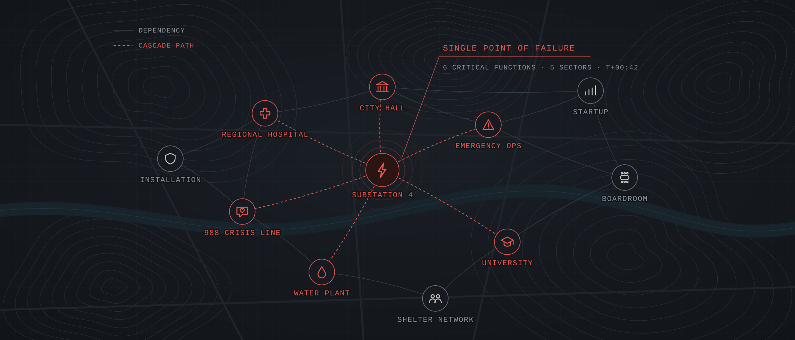
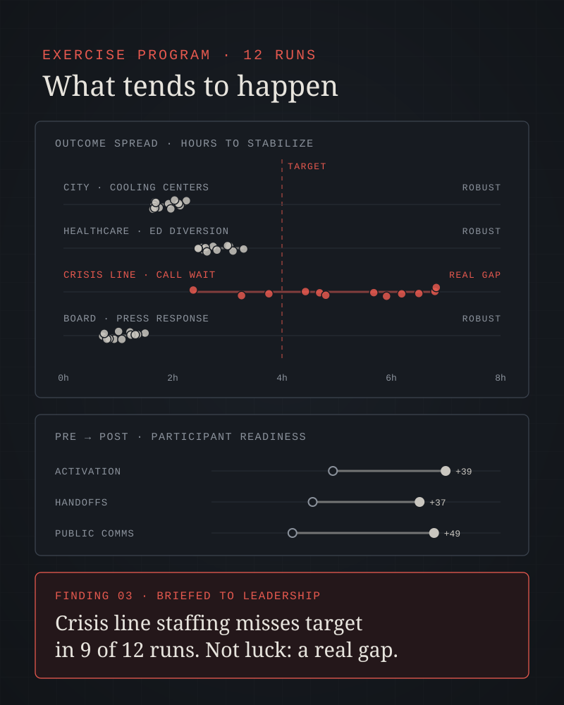
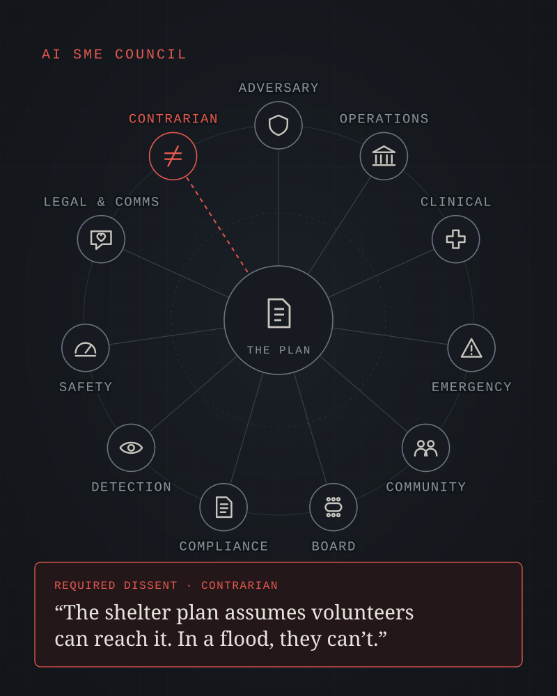

Cities & local government
Continuity of essential services and public trust when systems, budgets, or information environments are under strain.
- Ransomware on 911/CAD
- Utility outage
- Election disinformation
AI-Augmented Stress Testing
Countervail helps cities, hospitals, crisis services, universities, emergency managers, startups, boards, and militaries turn red teaming, stress testing, and tabletop exercises from once-a-year events into a standing capability. We use frontier models, agentic tools, MCP, and engineered AI subject-matter experts, and accountable humans make every call.
What improves with Countervail

The problem
People who can design a good exercise or poke holes in a plan are scarce. Every scenario they build is one they can't build elsewhere.
Teams share the mental models of the plans they test. Groupthink, hierarchy, and familiarity bias shrink the space of what could go wrong.
Exercises are costly, so they're rare. Findings go stale as systems, threats, people, and conditions change.
A traditional exercise is a scheduled sparring match with one opponent. An AI-augmented program is a gym full of tireless sparring partners, each fighting in a different style. The human coach still decides what the team needs to work on.
| Dimension | Traditional model | With Countervail |
|---|---|---|
| Cadence | Annual or semi-annual events | Continuous, with micro-exercises weekly or on change |
| Scenario generation | Handcrafted by a few experts | Hundreds of variants generated, human-curated |
| Perspectives | Whoever is in the room | Your team plus an AI SME council and stakeholder personas |
| Tooling | Generic templates or long dev cycles | Purpose-built tools for each scenario, built with AI-assisted coding |
| Data access | Manual exports and screenshots | MCP-connected agents with scoped, logged access |
| Evidence | Anecdotes from a single run | Comparable data across repeated runs, mapping the range of outcomes |
| After-action | Weeks to produce a report | Draft AAR within hours, traceable to evidence |
| Risk register | Static document, updated quarterly | Living register fed by continuous discovery |
Who we work with
The adversary isn't always a hacker. It might be a hurricane, a patient surge, a funding cliff, a viral rumor, or a quiet assumption buried in the plan itself. We bring the same disciplined, human-adjudicated approach to all of them.
Continuity of essential services and public trust when systems, budgets, or information environments are under strain.
Clinical operations that keep running through downtime, surge, and shortage, with patient safety as the test that matters.
Crisis lines, mobile teams, and behavioral health programs tested for the moments when demand spikes and staff are stretched.
Campus safety, research security, and institutional resilience across a community that turns over every year.
HSEEP-aligned exercises with branching injects, cascading infrastructure failures, and multi-agency role-players.
Pre-mortems and red teams sized for small teams who can't afford to learn the expensive way.
Decision-grade crisis simulations and strategy red teaming that sharpen oversight before the real thing.
Adversary emulation, mission assurance, wargaming, and CMMC readiness, delivered in accredited environments.
Practical resilience for mission-driven teams serving people who depend on them, on budgets that leave no slack.
Capabilities
Each capability is rated by how much it expands coverage, compresses timelines, or surfaces risk that would otherwise stay hidden.
Think like the opponent, whether that's a fraudster, a competitor, a ransomware crew, a skeptical regulator, or a nation-state. We red team systems, plans, and strategies, including your own AI agents.
Discuss a red team engagement →Business plans, emergency plans, policies, and pitch decks attacked from every angle before they meet reality.
Campaign plans built from threat reporting and mapped to ATT&CK, tailored to your environment.
Identity, network, and asset data ingested via MCP; multi-hop paths to what matters most.
Hundreds of candidate attack and failure hypotheses, ranked by feasibility and consequence.
Prompt injection, tool poisoning, data leakage, and goal hijacking against your agents (MITRE ATLAS, OWASP LLM Top 10).
Authorized pretext scenarios, phishing simulations, and rumor-response drills, within rules of engagement.
Each emulated technique paired with detection logic, test cases, and coverage gaps.
Find single points of failure across people, process, technology, facilities, and suppliers, then explore the second- and third-order effects before they happen for real.
Discuss a resilience assessment →FMEA-style failure modes across people, process, technology, facilities, and supply chain.
Essential services traced to systems, data, vendors, buildings, and people to expose single points of failure.
Second- and third-order effects of an outage, disaster, compromise, or loss of key staff.
Patient surges, call spikes, evacuations, enrollment swings, and viral growth tested against real capacity.
Chaos engineering experiments with blast-radius limits and rollback criteria.
Vendor loss, compromised updates, and shortages modeled against operational timelines.
Branching exercises that respond to your players' decisions, with AI role-players, realistic injects, and an after-action report drafted while the room is still warm. HSEEP-aligned when you need it to be.
Plan an AI-augmented TTX →Injects adapt in real time to player decisions instead of following a fixed script.
Adversaries, reporters, regulators, executives, patients and families, residents, students, investors, or partner agencies, on demand.
AI-driven simulations generate news, social posts, calls, alerts, and press queries in real time, reacting to what players do.
AAR drafted from transcripts with decisions, gaps, and recommendations traced to evidence.
Plausibility of player actions assessed against your plans, protocols, and real-world constraints.
Proven scenarios reused and refreshed on a regular cadence, so exercises start fast and stay timely.
Pre- and post-exercise assessments, decision logs, and transcript analysis captured the same way every run.
Focused 20-minute drills on demand for individuals, shifts, or small teams.
Continuous threat modeling, control gap analysis, and assumption hunting that feed a living risk register, not a static document updated once a quarter.
Discuss risk discovery →Assume the plan failed; generate plausible causal narratives for why.
Hidden assumptions extracted from plans, contracts, protocols, and strategy documents, and each one tested.
Controls mapped to the frameworks you answer to, such as HIPAA, FERPA, SOC 2, ISO 27001, NIST CSF, 800-53, and CMMC, with gaps flagged.
STRIDE or LINDDUN models generated from architecture diagrams, code, and design docs.
Tickets, near-misses, incident reports, audit notes, and complaints correlated to spot emerging risk patterns.
The register stays current as systems, threats, people, and findings change.

Operating principle
AI proposes. Humans dispose.
Any action that touches live systems, is irreversible, or affects people requires explicit human authorization. Agents run on least privilege, and every tool call is logged. Humans hold the decision gates at scoping, authorization of active testing, adjudication of findings, and acceptance of risk.
Exercise program
Most exercises end with a hot wash and a few anecdotes. We run them as a research program: each one answers a defined question, produces data you can compare across runs, and ends up in front of the people who can act on it.
One exercise tells you what happened once. A program tells you what tends to happen, how often, and what changes the outcome.

Agree on the questions your exercises should answer, the scenarios that will answer them, and the audience for each.
Define what each run tests, and standardize scenarios and data capture so results are comparable. Repeated play maps the full range of outcomes, not just one story.
Pre- and post-exercise assessments, decision logs, transcript analysis, and after-action reports, captured the same way every time.
Publish what the exercises show and brief senior leaders inside and outside your organization on the gaps they expose.
A library of proven scenarios the team reuses most of the time, refreshed on a regular cadence so they stay timely.
A facilitator kit with scenarios, injects, data capture templates, and guides so other teams and partners can run exercises to the same standard.
AI-driven simulations that generate news, social media, calls, and stakeholder reactions during play, responding to what players decide.
We help you hire, train, and develop an exercise team and a bench of facilitators who can run the program without us.
Signature methods
Beyond doing existing work faster, these methods were previously out of reach because of cost, staffing, or cognitive load.
Red, blue, and judge agents argue a scenario through multiple rounds. Like a moot court for your plan, the value lies in the arguments the judge can't dismiss. Your experts review the surviving arguments instead of generating them from scratch.
Hundreds of independent pre-mortems, each seeded with a different persona, threat, or failure. Clustered results turn intuition into something closer to a statistical distribution of failure.
Engineered AI SMEs review a plan from their lens, with a required dissent step against consensus.
Agents run attack, disaster, and failure scenarios against a mirror of your systems or operations, continuously, with no risk to the real thing.
A focused micro-exercise fires when a system goes live, a key person leaves, a vendor changes, a regulation shifts, or a new threat emerges.
Run the same scenario dozens of times with different players and variations. The spread of outcomes shows what is luck and what is a real gap.
Prompt injection via documents and web content, compromised MCP servers, excessive agent permissions, exfiltration through outputs.
One objective: find the single assumption that, if false, collapses the plan. Iterate until the plan survives.
AI SME Council
An AI SME is an engineered persona: a defined role, a grounding corpus of authoritative sources, an analytic standard suited to the domain (intelligence tradecraft, clinical evidence, engineering safety), and explicit limits on what it may assert. It behaves less like a chatbot and more like a structured analytic instrument.
Think of it as a reference librarian who has read the entire specialty library and can argue from it, but has never been in the field. Excellent for breadth and structured critique. No substitute for lived experience. We build each council around your sector and the people your decisions affect.

Thinks and plans as a specific threat: a criminal group, fraudster, activist, competitor, or nation-state.
Threat intel · ATT&CK groups · incident historyEvaluates impact on essential services, outcomes, and operational tempo.
Continuity plans · essential functions · BIAWeighs every option against patient and client safety, duty of care, and clinical protocol.
Clinical guidelines · safety event data · care protocolsTests plans against incident command, mutual aid, and the realities of a disaster footprint.
NIMS/ICS · HSEEP · hazard mitigation plansRepresents residents, students, patients, and vulnerable groups who bear the impact.
Community feedback · accessibility & equity guidanceProbes fiduciary exposure, strategy, runway, and how a decision will look in hindsight.
Governance charters · financials · audit findingsTests findings against the control frameworks and regulations you answer to.
HIPAA · FERPA · SOC 2 · NIST · CMMCAssesses whether trouble would be seen, escalated, and contained in time.
Detection rules · log schemas · runbooksExamines hazards, failure modes, and cascading effects.
FMEA · STPA · safety standardsSurfaces disclosure, regulatory, and reputational consequences.
Notification rules · crisis comms plansRequired to argue against consensus in every review.
The plan itself and all prior outputsConsulting services
Start with a single exercise, or stand up a standing capability inside your organization. Every engagement is scoped to your data-handling rules, regulatory obligations, and rules of engagement.
Capability build
We build the capability with your team, then hand it over: governance, approved models, AI SME personas, MCP integrations, tooling, and metrics.
Research agenda: the questions to answer and the audience for each. Governance, approved models, data handling, and AI rules of engagement. Two or three calibrated AI SMEs. Low-risk uses: pre-mortems, threat modeling, TTX drafting, AAR drafting.
Read-only MCP connections to your operational systems, such as ticketing, incident logs, asset inventories, and security tooling. First measured, AI-augmented TTX with pre- and post-assessments. Scenario library started. Multi-agent debate for plan and strategy reviews.
Agents on a digital twin or test range for continuous scenarios. Change-triggered micro-exercises and a living risk register. AI system red teaming. TTX-in-a-box kit and a trained facilitator bench. Findings briefed to leadership.
Program
We set the research agenda, design and measure your exercises, build the scenario library, and develop your team and facilitator bench until you can run it yourselves.
Discuss program leadership →Kit
A facilitator kit with tested scenarios, injects, live-feed tooling, measurement templates, and facilitator training, so your teams and partners can run exercises to the same standard.
Get the kit →Assessment
Where you stand today: exercise cadence, plans, tooling, data access, governance, and team skills, with a prioritized path to continuous assurance.
Request an assessment →Exercise
Branching scenario, AI role-players, realistic injects, and a traceable draft AAR within hours of the final inject. Cyber, clinical, disaster, or business continuity.
Plan a tabletop →Leadership
A half-day decision drill for boards and leadership teams, with realistic pressure from AI-played media, regulators, investors, and the public.
Plan a simulation →Assessment
Adversarial testing of your deployed agents and integrations for prompt injection, tool poisoning, permission sprawl, and data leakage.
Test your agents →Ongoing
Change-triggered micro-exercises, living risk register upkeep, and periodic plan assassination reviews, with leadership reporting.
Discuss a retainer →Training
Context engineering, agent orchestration, evaluation discipline, AI security literacy, and the most important skill: critical adjudication.
Plan a workshop →Reference operating model
AI drafts the questions to answer, maps critical functions, proposes scenarios.
Human sets the agenda, audience, and rules of engagement.
AI summarizes threat reporting, incident history, and sector guidance.
Human validates relevance and sourcing.
AI generates and ranks attack and failure hypotheses.
Human curates and prioritizes.
AI writes scenarios, injects, and tooling.
Human reviews code and scenario realism.
AI runs approved tests in a sandbox or twin; plays TTX roles.
Human authorizes actions and holds the kill switch.
AI analyzes decision logs and transcripts, compares runs, drafts findings and AAR.
Human adjudicates findings and severity.
AI drafts briefings, fixes, and plan updates.
Human briefs leaders, accepts risk, and assigns owners.
Mandatory human decision gate
Enabling stack
Each is useful alone. Together they create the capability. For sensitive data, we work with locally hosted models or accredited environments that match your obligations, from HIPAA-eligible services to FedRAMP and DoD IL levels.
Governance, safety & guardrails
Aligned with the NIST AI Risk Management Framework and ISO/IEC 42001, the rules of your sector (from HIPAA, 42 CFR Part 2, and FERPA to DoD AI policy), and your existing rules of engagement.
Machine-readable rules of engagement, allow-listed targets, least-privilege MCP credentials.
Human approval gates, sandbox or twin execution by default, and a kill switch.
De-identification by default; local or accredited models for PHI, student records, CUI, and other protected data.
Retrieved content treated as untrusted; vetted, pinned, isolated MCP servers; output filtering.
Mandatory human adjudication, evidence traceability, and full logging of prompts, tool calls, and approvals.
Periodic human-only exercises to maintain team skill and benchmark AI value.
Scenarios involving trauma, self-harm, or loss are designed with clinicians, flagged in advance, and include opt-outs.
Scenarios and findings reviewed for disparate impact on people with the least margin for error.
Measuring effectiveness
Minimum viable team
The AI-augmented team is smaller than you'd expect and more cross-trained. We help you staff and train it.
A bench of trained facilitators extends the program to more teams and partners. AI SMEs fill remaining perspective gaps, and human specialists validate high-stakes findings.
Start a conversation
It's who can generate, test, and learn from the most well-adjudicated hypotheses per week. Tell us what you're protecting and we'll propose a scoped first engagement.